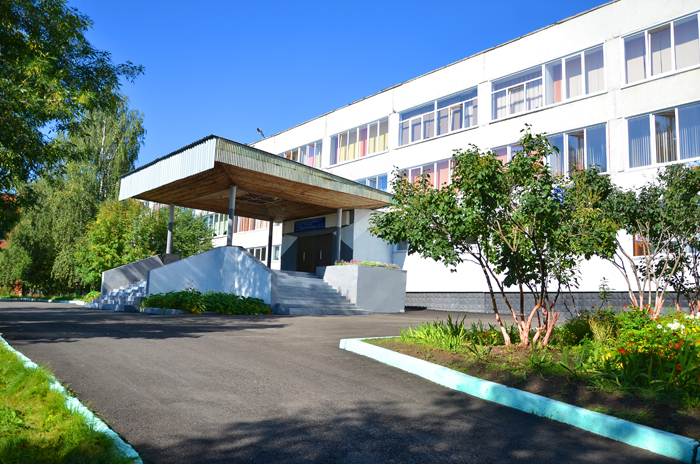
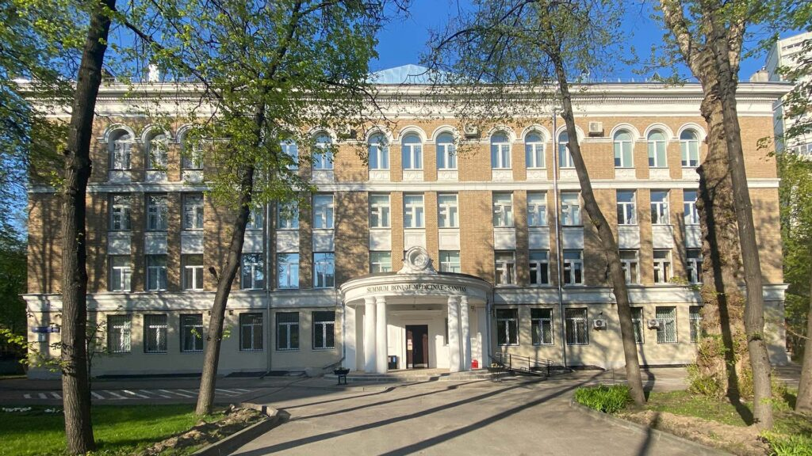
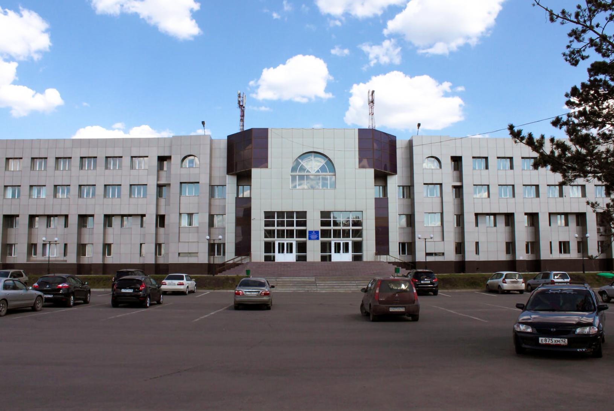

Добро пожаловать!
Найдите информацию об учебных заведениях города Прокопьевск
Узнать больше

Школы
Список всех школ города с адресами и контактами.

Колледжи
Информация о колледжах и специальностях.

Университеты
Детали о высших учебных заведениях города.